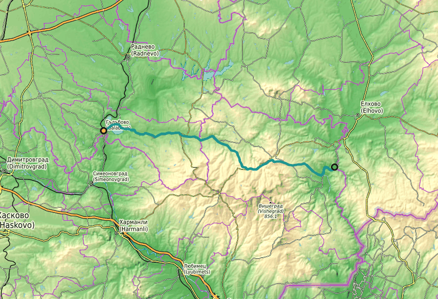
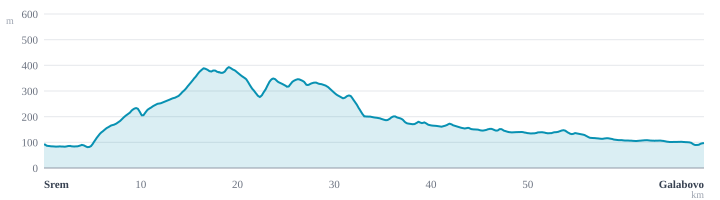

Leg 3 Monday 25 May 2026
The long transect — three Bulgarias in 68 km.


Sunday 24 May was Bulgaria's national education holiday. Many small municipal museums are closed on the holiday and unpredictable the day after. Before relying on a Topolovgrad stop today, phone the History Museum at +359 470 531 29 to confirm Monday hours, and the Hotel-Restaurant Imperial for Monday lunch.
Leg 3 is the only day that earns the full Sakar transect. From the Tundzha-bank village of Srem on the eastern edge, through the regional centre of Topolovgrad, across the granite spine at Sakartsi (population 11), down through Hlyabovo's dolmen-pocked pasture, and finally west into the Sazliyka basin and the Maritsa-Iztok lignite landscape that supplies a third of Bulgaria's electricity. The arc compresses three Bulgarias into 68 km: the lived-in agricultural Tundzha valley → a functioning small town with a tobacco-and-livestock past → a depopulated upland of 11- and 33-person villages → the post-industrial-but-still-operating energy basin around Obruchishte and Galabovo. The granite-and-pubescent-oak texture of the Sakar gives way around km 48 to alluvial flatness and the engineered geometry — 325-metre chimneys, overhead pylons, the artificial Rozov Kladenets reservoir — of the lignite complex.
The leg's start sits on the right (east) bank of the Tundzha, the Sakar's eastern boundary river. The bridge across the Tundzha just east of Srem (not on the route but visible) is the geographical hinge between Sakar and Strandzha. Stork nests on village poles. Srem also hosts an Anglo-Bulgarian horse farm — the practical end of yesterday's leg.
The regional anchor: about 3,800 people, the only proper town on Leg 3 between Srem and Galabovo. The GPX line passes through the southern ж.к. Сакар housing district, peaking about 900 m south of the town centre. A short northward detour (≈1 km) reaches the centre, the History Museum (ul. Bulgaria 31), and the Hotel-Restaurant Imperial (ul. Sv. Sv. Kiril i Metodij). The museum's content is largely about the Sakar dolmens — useful primer before Hlyabovo.
Cyril & Methodius Day was yesterday. Phone the museum on +359 470 531 29 to confirm Monday hours before committing to the detour.
The leg's high point and the village that gives the Sakar mountain its name. Eleven year-round residents. Houses standing but mostly empty; the church is likely locked; the fountain may not be running. Quiet, exposed, and a kind of beautiful that doesn't translate to photographs. The depopulation atlas's signature stop on the trip.
The largest and best-preserved Thracian dolmen in Bulgaria. Two attached chambers with a monumental façade; covering capstones still in situ; intact human remains were found inside — a Bulgarian first — and dated to the 9th–8th century BC. End of a marked tourist path from a small parking pull-off on the road to Bălgarska Polyana. The path is short but rough — lock the bikes at the road.
Recommended on Leg 3 morning, not Leg 2 evening: fresher legs, better light, and it's on the natural line of march here. Combine with a 30-minute stop in Hlyabovo and (if open) the museum in Topolovgrad earlier in the day for a coherent Thracian-archaeology thread.
The most concentrated dolmen landscape in Bulgaria. Sakar holds about 600 catalogued dolmens; the densest cluster is on the mountain's northern slope around Hlyabovo, Sakartsi, Bulgarska Polyana, Glavan. Beyond Nachevi Chairi, the named dolmens include Slavova Koriya, Byalata Treva, Avdzhika and Gaydarova Peshtera — the last harder to find than Nachevi Chairi and less signposted; ask in Hlyabovo for directions. Hlyabovo itself is an active village with a primary school and community hall — the kind of place where a fountain should be running.
Orlov dol's name means "Eagle valley." Working village with stork nests; the open-pasture landscape around it carries scattered mature oaks that are typical of Sakar Imperial Eagle habitat. Scan the tallest solitary oaks for nests — Sakar holds the largest Imperial Eagle population in Bulgaria. Vladimirovo, six kilometres further on, is the trip's second near-ghost village at 33 residents — same pattern as Sakartsi.
A 360-hectare artificial reservoir built for power-plant cooling water. Importantly: it never freezes (warm cooling-water input), which makes it a major migratory and wintering site — 142 bird species recorded, 34 in the Bulgarian Red Data Book, including wintering Pygmy Cormorant, Dalmatian Pelican and Ferruginous Duck. In late May you'll see breeding herons, egrets and terns, with marsh harriers quartering the reedbeds; black storks may be fishing. The most ecologically interesting object on the route west of Hlyabovo.
Bulgaria's largest power complex sits north of Galabovo: three lignite-fired plants, ~3 GW combined, with Maritsa-Iztok-2 the biggest thermal plant in the Balkans. Its 325-metre chimneys are the tallest structures in Bulgaria and become visible on the northern horizon from around Mudrets (km 48), dominating the final twenty kilometres. EU-mandated phase-out is 2038; the basin's wind-down is visibly underway in operations. The arc — energy-industrial Bulgaria → pastoral Sakar → energy-industrial Bulgaria — closes here.
Mramor (km 12): small Topolovgrad-municipality village. Working stork nests on the church and on power poles in late May.
Sakartsi dolmen cluster (km 24–28, north of the village): the Hlyabovo dolmen field actually starts here; some chambers are nearer Sakartsi than Hlyabovo. Less signposted than the Hlyabovo cluster.
Byalata Treva "royal" dolmen (north slopes above Hlyabovo): reportedly the best-preserved dolmen in southeastern Europe. Harder to find than Nachevi Chairi, less signposted; ask in Hlyabovo for directions.
Mudrets (km 48): the first village in Galabovo municipality and Stara Zagora province — you've crossed out of Haskovo. Granite gives way to alluvium; pasture gives way to large arable fields.
Mednikarovo and Obruchishte (km 54 and 60): both inside the Maritsa-Iztok industrial zone. Mednikarovo sits ~3 km from the TPP-3 site; Obruchishte is the village adjacent to the Rozov Kladenets reservoir.
Galabovo finish (km 68): the trip closes where it began. Town of about 6,500. Trains to Sofia and Stara Zagora. Local headquarters of the lignite economy — TPP-1 "AES Galabovo" (670 MW, US-owned, operational since 2011) sits on the town's northern edge.
Five villages have been lost to the mine: Targovishte, Ovcharci, Golyama Detelina, Malka Detelina, Gledachevo. €1.2 bn from the EU Just Transition Fund has been allocated to the Stara Zagora region for the 2038 phase-out; TPP-2 ran at 30% of capacity in March 2024.
Tobacco: Topolovgrad and the Sakar were historically oriental-tobacco country. Three-quarters of the town's population was once in tobacco and livestock. Acreage has collapsed since the 2007 EU CAP reforms ended Bulgaria's tobacco subsidies; expect to see far fewer fields than a 1990 cyclist would have.
This is not the Imperial-Eagle ridge of Leg 2 — Leg 3's open pasture and arable mosaic favours harriers (Montagu's, marsh), short-toed snake eagles, Long-legged Buzzards and black kites more than the ridge raptors. White stork nests are reliably active in late May on power poles and church belfries through Mramor, Hlyabovo, Orlov dol and Mudrets — chicks have hatched, adults shuttle frogs and lizards across the hour. In the lone-oak pastures around Orlov dol and Vladimirovo, scan the tallest solitary oaks for Imperial Eagle nests. Cricket and cicada hum starts up by mid-morning; woodlark and corn bunting are the dominant ambient. The Tundzha-basin smell is dry pasture and herbs (oregano, thyme), and — uniquely on this leg — a faint sulphur tang on the wind from km 50 westward when the wind is from the north. Around Rozov Kladenets expect night herons, little egrets, marsh harriers quartering reedbeds, and possibly black stork.
Nachevi Chairi dolmen, the four-kilometre signposted spur from Hlyabovo. The largest and best-preserved Thracian dolmen in Bulgaria. The path is short, the dolmen is photographic, and no other megalith on the three-day route competes.
km 0–12 (Srem → Mramor): pleasant but unspectacular pastoral riding. Stork nests; no POIs en route.
km 36–48 (Orlov dol → Mudrets): the longest "between things" stretch. Open pasture, lone oaks, big sky, near-empty villages. Beautiful in a particular Balkan-emptied way, but nothing to "see" in the POI sense. The ride-your-bike-and-think section.
km 54–66 (Mednikarovo → Galabovo approach): industrial-rural transition. Visually arresting in a non-tourism-brochure way. Rozov Kladenets is the redeemer — don't miss it.